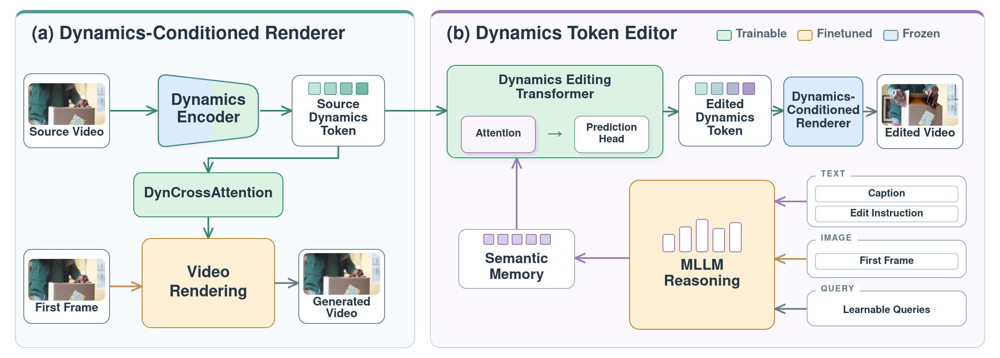

TL;DRRVD turns a video's dynamics into a compact, editable dynamics token: change what happens, retime how it unfolds, or replay the same motion in a completely new visual world.
One representation, three kinds of control. Left: dynamics editing (the dog still pounces on its toy, but the toy is no longer torn apart and stays intact). Middle: training-free retiming (the same run played at 0.5×). Right: re-rendering (the same whisking motion performed by robotic arms). Top row: source video. Bottom row: RVD.
Method overview
RVD learns a compact representation of how a video changes, then edits that representation directly.
1
Learn dynamics through reconstruction
A dynamics encoder compresses the source video into a dynamics token. A renderer must reconstruct the video using this dynamics token together with the first frame, which already provides the scene's appearance. This encourages the dynamics token to preserve motion and temporal evolution while leaving visual context to the first frame.
A language-guided editor changes the compact dynamics token according to an instruction, such as making an object remain intact or turning a run into a walk. The same renderer combines the edited dynamics token with the desired visual context to generate a video with new dynamics.

Video Dynamics Editing by RVD
Additional instruction-driven dynamics edits across edit families: state changes (open/closed, cut/whole, broken/intact), interactions (hold/throw), locomotion (walk/run, avoiding an obstacle), and animal behavior (active/resting).
Training-Free Retiming in Dynamics-Token Space
Because the dynamics token keeps an explicit temporal axis, speed can be changed by resampling the dynamics token over time. No editor and no extra training are used, and the renderer is the same frozen one. 0.5× stretches the dynamics token (nearest-neighbor resampling followed by light temporal smoothing), so the clip covers only the first half of the original motion. 2× subsamples every other dynamics-token step, so the full motion is completed in the first half of the clip. All four panels have the same length and play in sync: compare how far the motion has progressed at the same moment.
Appearance-Controlled Re-Rendering by RVD
For each source video, the same dynamics token is rendered under three new visual contexts: a new foreground subject, a new background, and a new global style. The motion, including its timing, should match the source in all three.
Appearance re-rendering: comparison with baselines
The dynamics token of the source video is kept fixed; only the visual context (edited first frame and caption) changes. RVD should change the foreground, background, or style while reproducing the source motion and its timing exactly. Watch whether each method keeps the original motion, including hand trajectories, gait phase, and head turns, and whether it stays temporally stable.
Video dynamics editing: comparison with baselines
Here the instruction asks to change how the scene evolves, not how it looks. RVD edits the dynamics token with the language-guided editor and renders it in the source scene. Appearance editors tend to reproduce the source motion, or they drift in identity and scene.
BibTeX
If you find RVD useful, please cite our work.
@article{Yuan_2026_RVD,
title={{Reimagine Video Dynamics}},
author={Yuan, Yu and Lu, Yawen and Song, Guoxian and Duarte, Kevin and Kalarot, Ratheesh and Chang, Di and Wang, Xijun and Chan, Stanley H.},
journal={arXiv preprint arXiv:2609.36496},
year={2026}
}